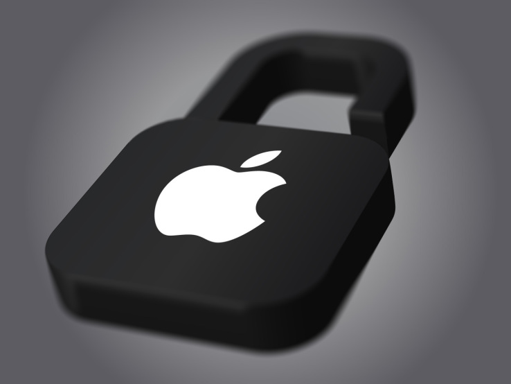
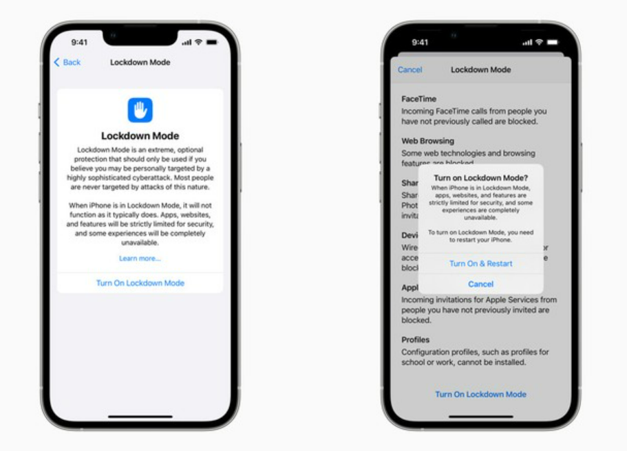

<!DOCTYPE html>

<html lang="pt_br"></html>

    <head>
            <title> Noticiário TI</title>
            <meta charset="utf-8">
    </head>

    <body bgcolor="Lavender"> 
        
        <a name="topo"> </a>

        <hr color = "Indigo" size="100"/>
        
        <h1>
            <p align="center">
                <strong> <u>
                 Apple anuncia Lockdown Mode para proteger usuários contra hackers
                </u> </strong>
            </p>
        </h1>

        <h2 align="Center"> Sobre o anunciamento </h2>

        <p align="justify" >
            <font color="black" size="4" face="arial">
                Em um esforço para aumentar a proteção de jornalistas, ativistas e políticos contra 
                ataques de hackers, a Apple anunciou nesta quarta-feira (6) o lançamento de um recurso 
                chamado "Lockdown Mode", um novo recurso aos usuários dos futuros sistemas iOS 16, iPadOS
                16 e macOS 13 Ventura. O Lockdown Mode – ou “Modo de Bloqueio”, em tradução livre – chegará
                para trazer mais segurança contra spywares.
            </font>
        </p>

        <figure align="center">
            <a href="https://www.menosfios.com/yispecter-o-novo-virus-que-ataca-dispositivos-da-apple/apple-lock/"   
            target="_blank" title="apple-lock">
            
            </a>
            <figcaption align="center">
                <u>  Fonte: Menosfios </u>
            </figcaption>
        </figure>


        <details align="Center">
            <summary> <u><font color=" black" size=5 face="arial">  Informações e funcionalidades </font> </u> </summary>
            
            <p align="justify" >
                <font color="black" size="4" face="arial">
                    Segundo a empresa americana, o "Lockdown Mode" poderá bloquear anexos de mensagens,
                    desabilitar visualizações de links, desativar tecnologias de navegação na Web por padrão
                    e bloquear convites e chamadas de FaceTime desconhecidas, entre outras funcionalidades.
                    <br/>

                </font>
            </p>
    
            <figure align="center">
                <a href="https://www.apple.com/newsroom/2022/07/apple-expands-commitment-to-protect-users-from-mercenary-spyware/"   
                target="_blank" title="">
                
                </a>
                <figcaption align="center">
                    <u>  Imagens: Divulgação / Apple </u>
                </figcaption>
            </figure>

            <p align="justify" >
                <font color="black" size="4" face="arial">
                    Entre as principais restrições impostas pelo novo modo, está o bloqueio da maioria de anexos
                    no app Mensagens – menos imagens – e desabilitação de visualizações de links. Já a navegação 
                    na web ficará sem a compilação JavaScript just-in-time (JIT), enquanto o usuário não definir 
                    um site como confiável.
                    <br/>
                    <br/>
                    Os convites e solicitações recebidos serão bloqueados, inclusive as chamadas do FaceTime.
                    Já a ligação com fio a um computador ou acessório externo ficará bloqueada. Para completar,
                    o dispositivo não poderá instalar perfis de configuração nem se registrar no gerenciamento 
                    de dispositivos móveis (MDM).
                    <br/>
                    <br/>
                    Os usuários da terceira versão beta do iOS 16, do iPadOS 16 e do macOS Ventura já podem utilizar
                    o Lockdown Mode.
                </font>
            </p>
    
        </details>

        </br>
        </br>

        <details align="Center">
            <summary> <u><font color=" black" size=5 face="arial"> Por que tais medidas foram tomadas? </font> </u> </summary>
            
            <p align="justify" >
                <font color="black" size="4" face="arial">
                    A medida ocorre após duas empresas de Israel explorarem falhas no software da Apple para invadir
                    iPhones de forma remota sem a intervenção do usuário. Fabricante do Pegasus, provavelmente o 
                    spyware utilizado para realizar esses ataques, o NSO Group foi processado pela companhia americana 
                    e posto em uma lista de sanções comerciais por autoridades dos EUA.
                    <br/>
                    <br/>
                    Em sua defesa, o NSO alega que o malware é usado apenas a serviço de investigações contra “terroristas”
                    e “pedófilos”, embora existam evidências substanciais de que a justificativa não procede.
                    <br/>
                    <br/>
                    Atualmente, o Pegasus é uma das ferramentas de vigilância mais perigosas em ação no mundo. O programa é
                    capaz de monitorar todas as informações do celular ou computador da vítima e acionar sensores que
                    sequestram a câmera e o microfone do aparelho afetado.
                    <br/>
                    <br/>
                    A “Apple” ainda recompensará em até US$ 2 milhões os pesquisadores de segurança que encontrarem
                    falhas ou vulnerabilidades no Lockdown Mode, como parte do seu programa Security Bounty.
                </font>
            </p>
        </details>

    </br>
    </br>


        <details>
            <summary> FONTES: </summary>
                <a href=https://www.tudocelular.com/seguranca/noticias/n192401/apple-anuncia-lockdown-mode-ios-16-macos-ventura.html target="_blank">
                    <p> https://www.tudocelular.com/seguranca/noticias/n192401/apple-anuncia-lockdown-mode-ios-16-macos-ventura.html </p>
                </a>
                
                <a href=https://olhardigital.com.br/2022/07/06/reviews/apple-anuncia-lockdown-mode-como-medida-extrema-de-protecao-contra-hackers target="_blank">
                    <p> https://olhardigital.com.br/2022/07/06/reviews/apple-anuncia-lockdown-mode-como-medida-extrema-de-protecao-contra-hackers/</p>
                </a>
        </details>
        <br/>
        <p align="center"> <a href="#top"> VOLTAR AO TOPO DA PÁGINA </a></p>
    </body>

</html>